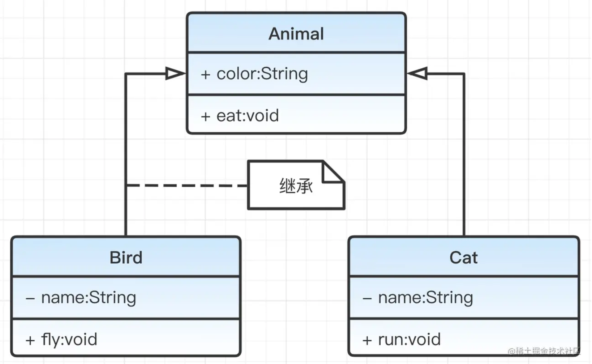
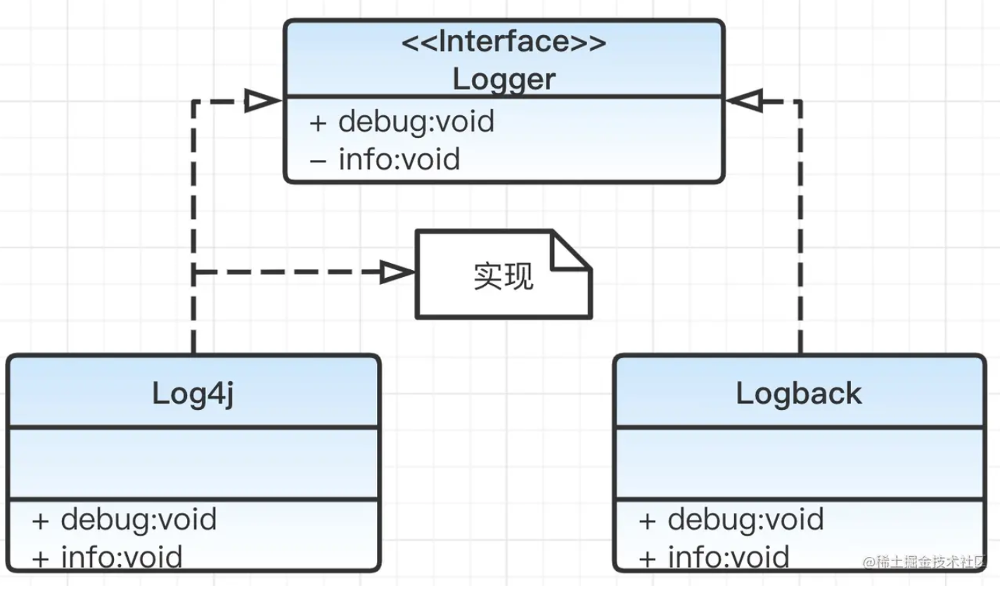
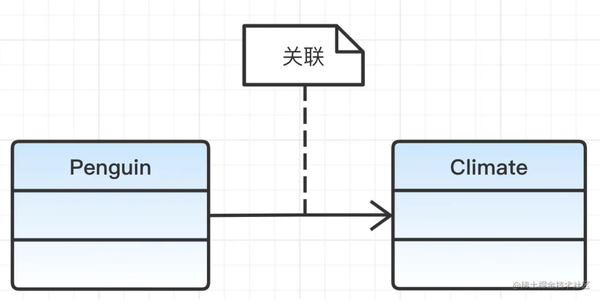
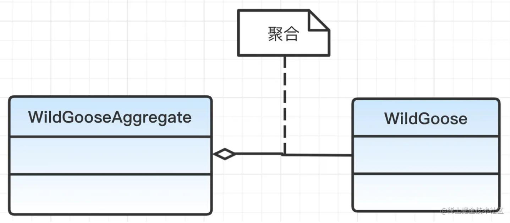
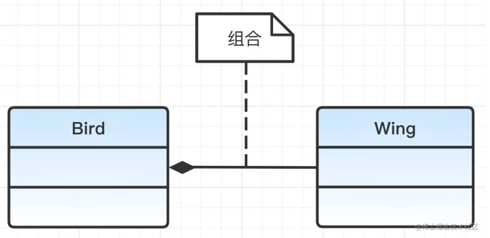
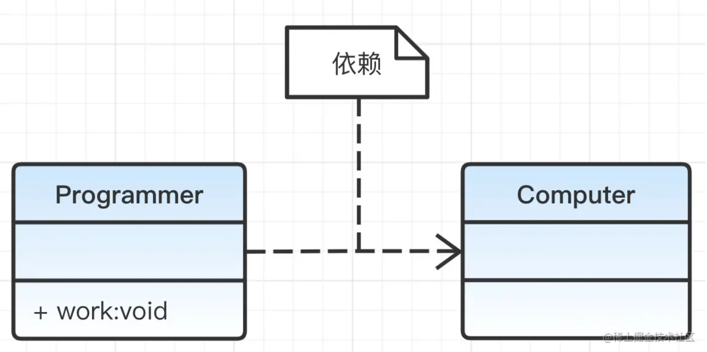

常见设计模式总结
我打算再理一遍常见的设计模式以加深印象，在这里先记录最基本的一些概念。
什么是设计模式？
设计模式是软件设计中常见问题的典型解决方案。它们就像预制的蓝图，你可以根据需要进行定制，以解决代码中反复出现的设计问题。
模式不是一段具体的代码，而是一个解决特定问题的通用概念。你可以遵循模式的思路，实现一个适合你自己程序实际情况的解决方案。
为什么应该学习设计模式？
设计模式是解决软件设计中常见问题的经过验证的工具包。它会教你如何使用面向对象设计的原则来解决各种问题。
设计模式定义了一种通用的语言，团队成员可以使用它更高效地进行沟通。能更好的应对变更。同时在解决某些问题时会给出灵感。
实际上，不使用设计模式也可以完成很多程序、项目，但使用设计模式会帮你避免后续的很多麻烦、节约沟通成本、使你的代码更加优雅。
每个设计模式都可以通过以下几个部分来理解
- 模式的意图：简要描述问题和解决方案。
- 动机：进一步解释问题以及模式如何提供解决方案。
- 类结构：展示模式中每个部分以及它们之间的关系。
- 代码示例：使用一种流行的编程语言编写的代码示例，帮助更容易理解模式背后的思想。
七大设计原则
单一职责原则（Single Responsibility Principle, SRP）
一个类应该只有一个引起它变化的原因。
单一职责原则又称单一功能原则。这里的职责是指类变化的原因，单一职责原则规定一个类应该有且仅有一个引起它变化的原因，否则类应该被拆分（There should never be more than one reason for a class to change）。
- 职责：
- 职责是指类或模块的功能或任务。
- 单一职责：
- 一个类或模块应该只负责一项功能或任务，而不是将多个功能或任务耦合在一起。
为什么需要单一职责原则
- 提高代码的可维护性：
- 当一个类只负责一项职责时，修改代码的影响范围更小，降低了引入新错误的风险。
- 提高代码的可复用性：
- 职责单一的类更容易被复用，因为它们的功能更加明确和独立。
- 降低耦合性：
- 职责单一的类与其他类的依赖关系更少，降低了系统的耦合性。
- 提高代码的可读性：
- 职责单一的类更容易理解和维护，因为它们的代码更加简洁和清晰。
该原则提出对象不应该承担太多职责，如果一个对象承担了太多的职责，至少存在以下两个缺点：
- 一个职责的变化可能会削弱或者抑制这个类实现其他职责的能力；
- 当客户端需要该对象的某一个职责时，不得不将其他不需要的职责全都包含进来，从而造成冗余代码或代码的浪费。
开放封闭原则（Open/Closed Principle, OCP）
软件实体（类、模块、函数等）应该对扩展开放，但对修改封闭。
软件的设计应该允许在不修改现有代码的情况下，通过扩展来增加新的功能。
- 对扩展开放：
- 当需求变化时，可以通过添加新的代码来扩展系统的功能，而不是修改现有的代码。
- 对修改封闭：
- 现有的代码应该尽量保持稳定，避免因为需求变化而频繁修改。
为什么需要开放封闭原则
- 提高代码的可维护性：
- 减少对现有代码的修改，降低引入新错误的风险。
- 提高代码的可复用性：
- 通过扩展而不是修改，可以更好地复用现有的代码。
- 降低耦合性：
- 通过抽象和接口，减少模块之间的依赖关系。
开闭原则的实现方法：可以通过“抽象约束、封装变化”来实现开闭原则，即通过接口或者抽象类为软件实体定义一个相对稳定的抽象层，而将相同的可变因素封装在相同的具体实现类中。
因为抽象灵活性好，适应性广，只要抽象的合理，可以基本保持软件架构的稳定。而软件中易变的细节可以从抽象派生来的实现类来进行扩展，当软件需要发生变化时，只需要根据需求重新派生一个实现类来扩展就可以了。
开放封闭原则是面向对象设计中的重要原则，强调软件实体应该对扩展开放，但对修改封闭。通过使用抽象、策略模式和依赖注入等方法，可以实现开放封闭原则，提高代码的可维护性、可复用性和可扩展性。
里式替换原则（Liskov Substitution Principle, LSP）**
子类型必须能够替换其基类型，而不会影响程序的正确性。
如果一个程序使用了一个基类，那么它应该能够使用该基类的任何子类，而不会产生错误或异常。
- 子类型替换基类型：
- 子类应该能够完全替代基类，而不会影响程序的正确性。
- 行为一致性：
- 子类应该保持基类的行为规范，不能改变基类的预期行为。
为什么需要里式替换原则
- 提高代码的可复用性：
- 子类可以替代基类，使得代码更容易复用。
- 提高代码的可维护性：
- 子类保持基类的行为规范，降低了引入新错误的风险。
- 降低耦合性：
- 子类和基类之间的关系更加清晰，降低了系统的耦合性。
里式替换原则是面向对象设计中的重要原则，强调子类型必须能够替换其基类型，而不会影响程序的正确性。通过保持子类与基类的行为一致性、不强化前置条件和不弱化后置条件，可以实现里式替换原则，提高代码的可复用性、可维护性和可扩展性。
里氏替换原则是继承复用的基础，它反映了基类与子类之间的关系，是对开闭原则的补充，是对实现抽象化的具体步骤的规范。
迪米特法则（Law of Demeter, LoD）
迪米特法则（Law of Demeter，LoD）又叫作最少知识原则（Least Knowledge Principle，LKP)。
一个对象应该对其他对象有最少的了解，只与直接的朋友通信。
- 直接的朋友：
- 直接的朋友是指当前对象的成员变量、方法参数、方法返回值等。
- 最少的知识：
- 一个类应该只与直接的朋友交互，而不应该了解或操作朋友的朋友。
为什么需要迪米特法则
- 降低耦合性：
- 减少类之间的依赖关系，降低系统的耦合性。
- 提高代码的可维护性：
- 类的职责更加明确，修改一个类的影响范围更小。
- 提高代码的可复用性：
- 类的依赖关系更少，更容易被复用。
迪米特法则强调一个对象应该对其他对象有最少的了解，只与直接的朋友通信。通过只与直接的朋友交互和使用中介类，可以实现迪米特法则，降低系统的耦合性，提高代码的可维护性和可复用性。
接口隔离原则（Interface Segregation Principle, ISP）
客户端不应该依赖于它不需要的接口。
一个类不应该被迫实现它不需要的方法，接口应该尽量细化，每个接口只包含客户端需要的方法。
- 细粒度的接口：
- 接口应该尽量细化，每个接口只包含客户端需要的方法。
- 避免臃肿的接口：
- 不要将多个功能耦合在一个接口中，避免客户端实现不需要的方法。
为什么需要接口隔离原则
- 提高代码的可维护性：
- 细粒度的接口更容易修改和维护，因为修改一个接口的影响范围更小。
- 提高代码的可复用性：
- 细粒度的接口更容易被复用，因为它们的功能更加明确和独立。
- 降低耦合性：
- 细粒度的接口减少了类之间的依赖关系，降低了系统的耦合性。
接口隔离原则强调客户端不应该依赖于它不需要的接口，接口应该尽量细化，每个接口只包含客户端需要的方法。通过分离接口和使用接口组合，可以实现接口隔离原则，提高代码的可维护性、可复用性和可扩展性。
接口隔离原则和单一职责都是为了提高类的内聚性、降低它们之间的耦合性，体现了封装的思想，但两者是不同的：
- 单一职责原则注重的是职责，而接口隔离原则注重的是对接口依赖的隔离。
- 单一职责原则主要是约束类，它针对的是程序中的实现和细节；接口隔离原则主要约束接口，主要针对抽象和程序整体框架的构建。
依赖倒置原则（Dependency Inversion Principle, DIP）
高层模块不应该依赖于低层模块，二者都应该依赖于抽象。抽象不应该依赖于细节，细节应该依赖于抽象。
设计应该依赖于抽象而不是具体实现，从而降低模块之间的耦合性，提高系统的灵活性和可维护性。
- 高层模块：
- 高层模块是指包含业务逻辑的模块，通常负责系统的核心功能。
- 低层模块：
- 低层模块是指提供基础服务的模块，通常负责具体的实现细节。
- 抽象：
- 抽象是指接口或抽象类，定义了模块之间的契约。
- 细节：
- 细节是指具体的实现类，负责实现抽象定义的契约。
为什么需要依赖倒置原则
- 降低耦合性：
- 高层模块和低层模块都依赖于抽象，减少了模块之间的直接依赖关系。
- 提高代码的可维护性：
- 修改具体实现不会影响高层模块，降低了引入新错误的风险。
- 提高代码的可复用性：
- 抽象接口更容易被复用，因为它们不依赖于具体实现。
- 提高系统的灵活性：
- 通过替换具体实现，可以轻松扩展系统的功能。
依赖倒置原则是实现开闭原则的重要途径之一，它降低了客户与实现模块之间的耦合。
由于在软件设计中，细节具有多变性，而抽象层则相对稳定，因此以抽象为基础搭建起来的架构要比以细节为基础搭建起来的架构要稳定得多。这里的抽象指的是接口或者抽象类，而细节是指具体的实现类。
使用接口或者抽象类的目的是制定好规范和契约，而不去涉及任何具体的操作，把展现细节的任务交给它们的实现类去完成。
合成复用原则（Composite Reuse Principle, CRP）
尽量使用对象组合（Composition）或聚合（Aggregation），而不是继承（Inheritance）来实现代码复用。
通过将已有对象组合成新的对象来实现功能，而不是通过继承已有的类来扩展功能。
- 组合（Composition）：
- 组合是一种强关联关系，表示整体对象拥有部分对象，部分对象的生命周期与整体对象一致。
- 聚合（Aggregation）：
- 聚合是一种弱关联关系，表示整体对象包含部分对象，但部分对象的生命周期与整体对象无关。
- 继承（Inheritance）：
- 继承是一种类与类之间的关系，子类继承父类的属性和方法。
为什么需要合成复用原则
- 降低耦合性：
- 组合和聚合比继承的耦合性更低，因为组合和聚合是通过接口或抽象类实现的，而不是直接依赖于具体实现。
- 提高代码的灵活性：
- 组合和聚合可以动态地替换部分对象，而继承是静态的，无法在运行时改变。
- 提高代码的可维护性：
- 组合和聚合使得代码更容易修改和扩展，因为修改一个类不会影响其他类。
- 避免继承的缺点：
- 继承可能导致类层次结构过于复杂，增加代码的复杂性和维护成本。
合成复用原则就是在一个新的对象里通过关联关系（包括组合关系和聚合关系）来使用一些已有的对象，使之成为新对象的一部分；新对象通过委派调用已有对象的方法达到复用功能的目的。
简言之：复用时要尽量使用组合/聚合关系（关联关系），少用继承。
好莱坞法则（Hollywood Principle）
不要调用我们，我们会调用你。（Don’t call us, we’ll call you.）
高层模块（如框架或系统）负责控制流程，低层模块（如具体实现）只需提供具体的功能实现，而不需要主动调用高层模块。
- 控制反转（Inversion of Control, IoC）：
- 好莱坞法则体现了控制反转的思想，即高层模块控制流程，低层模块被动响应。
- 依赖注入（Dependency Injection, DI）：
- 好莱坞法则通常通过依赖注入实现，高层模块将依赖注入到低层模块中，而不是低层模块主动获取依赖。
为什么需要好莱坞法则
- 降低耦合性：
- 低层模块不需要知道高层模块的存在，减少了模块之间的依赖关系。
- 提高代码的可维护性：
- 高层模块控制流程，低层模块只需关注具体实现，代码更容易修改和维护。
- 提高代码的可复用性：
- 低层模块可以在不同的高层模块中复用，因为它们不依赖于具体的高层模块。
好莱坞法则强调高层模块控制流程，低层模块被动响应，体现了控制反转和依赖注入的思想。通过好莱坞法则，可以降低模块之间的耦合性，提高代码的可维护性和可复用性。
类图基础
1. UML 类图的基本元素
（1）类（Class）
-
表示：矩形框，分为三部分：
- 类名：顶部，粗体显示。
- 属性：中间，格式为
[可见性] 属性名: 类型 [= 默认值]。 - 方法：底部，格式为
[可见性] 方法名(参数列表): 返回类型。
-
示例：
1 2 3 4 5 6 7 8 9+---------------------+ | Person | +---------------------+ | - name: String | | - age: int | +---------------------+ | + getName(): String | | + setAge(age: int) | +---------------------+
（2）接口（Interface）
-
表示：矩形框，顶部有
<<interface>>标识，分为两部分：- 接口名：顶部，粗体显示。
- 方法：底部，格式与类的方法相同。
-
示例：
复制
1 2 3 4 5 6+---------------------+ | <<interface>> | | Runnable | +---------------------+ | + run(): void | +---------------------+
（3）关系（Relationships）
-
继承（Inheritance）：
-
表示：空心三角形箭头，从子类指向父类。

-
-
实现（Implementation）：
-
表示：空心三角形箭头，从实现类指向接口。

-
-
关联（Association）：
-
表示：实线箭头，从源类指向目标类，可以标注角色名和多重性。
**「关联」**关系通常表现为类的私有属性。
1 2 3public class Plan { private Climate climate; }
-
-
聚合（Aggregation）：
-
表示：空心菱形箭头，从整体类指向部分类。
「聚合」 是关联关系的一种，表示一种弱的“拥有”关系。
用Java代码表示大雁是群居动物，每只大雁都属于一个雁群，一个雁群可以有多只大雁。
1 2 3public class WildGooseAggregate { private List<WildGoose> wideGooses; }
-
-
组合（Composition）：
-
表示：实心菱形箭头，从整体类指向部分类。
「组合」 是关联关系的一种，表示一种强的“拥有”关系。体现了严格的部分和整体的关系。部分和整体的生命周期一样。
1 2 3 4 5 6public class Bird { private Wing wing; public Bird() { this.wing = new Wing(); } }
-
-
依赖（Dependency）：
-
表示：虚线箭头，从依赖类指向被依赖类。

-
「依赖」 关系体现为局部变量、方法的形参，或者对静态方法的调用。
|
|
All in One的例子
前面介绍了类之间的6种关系。为了更好地理解这6种关系。下面使用一个完整的例子（汽车）。该示例中包含了这6种关系。

说明：
- 车的类图结构为，表示车是一个抽象类；
- 它有两个继承类：小汽车和自行车；它们之间的关系为**「实现」** 关系，使用带空心箭头的虚线表示；
- 小汽车为与SUV之间也是**「继承」** 关系，它们之间的关系为泛化关系，使用带空心箭头的实线表示；
- 小汽车与发动机之间是**「组合」** 关系，使用带实心箭头的实线表示；
- 学生与班级之间是**「聚合」** 关系，使用带空心箭头的实线表示；
- 学生与身份证之间为**「关联」** 关系，使用一根实线表示；
- 学生上学需要用到自行车，与自行车是一种**「依赖」** 关系，使用带箭头的虚线表示；